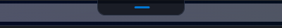

DevBar is a 125-pixel pill at the top of your screen. Hover it and it drops into a card with your clipboard, listening ports, containers, repos and Claude Code sessions. Press Ctrl Alt Space and Jarvis listens, answers out loud, and can actually do the thing.
Windows 10/11 · no admin rights · MIT licensed · no account, ever
Hover to expand, look away to dismiss. Nothing to alt-tab past.
What's on the bar
Every shot below is DevBar running on Windows 11 - real ports, real containers, real sessions. Each module is event-driven or polls only while its card is on screen, so none of it costs you anything when the bar is closed.



The Jarvis tab
Not a chatbot in a window - a voice loop wired into the modules above. It hears you with streaming speech recognition, thinks on free-tier models, calls real tools on your machine, and speaks the result while the rest of the answer is still being generated.
A global shortcut you can rebind. The mic is shut until that moment - or until you say "Hey Jarvis", if you turn the on-device wake word on.
0 ms idle costStreaming transcription, with pauses handled so you don't get cut off mid-thought.
~500 ms after you stopYour words, your pinned profile and the tool list go to the first model in your chain; the next one takes over on a rate limit.
~400 ms to first word27 tools: ports, containers, repos, clipboard, apps, screen, mail, calendar, shell. Destructive ones are read back and wait for your yes.
your callSentence by sentence, so it starts talking before the reply is finished. Talk over it to interrupt.
~350 ms to first soundWhat you can say
// DEVBAR_JARVIS_TRACE=1 state Listening -> Thinking llm groq:openai/gpt-oss-120b (1589 tok) tools=[set_reminder{"minutes":0.25, "text":"stretch"}] reminder armed: 'stretch' in 15s llm groq:openai/gpt-oss-120b "All set, Vivek. I'll nudge you in fifteen seconds." state Thinking -> Speaking …15s later announce: Reminder: stretch.
Every action Jarvis takes shows up as a chip on the card, and in a trace log you can switch on. Nothing happens invisibly.
Bring your own keys
DevBar has no server and resells nothing. You paste your own keys, and they're encrypted on your machine with Windows DPAPI. Every layer has a free option, and the voice can run entirely offline.
Your data
A voice assistant that can read your mail should be exact about what leaves your computer. So here it is, without the marketing fog.
Open source
DevBar is MIT licensed and built to be extended. A module is five methods; drop the compiled DLL into %LOCALAPPDATA%\DevBar\modules\ and it appears as a tab. The only hard rule is the performance contract: do nothing between OnCollapsed and the next OnExpanded.
public interface IDevBarModule { // Stable id, used in config. string Id { get; } string DisplayName { get; } string IconGlyph { get; } // Built once, lazily, on first view. UserControl BuildCard(); // Paged in: start timers, fetch data. void OnExpanded(); // Paged out: stop everything. Go quiet. void OnCollapsed(); }
Bugs, module ideas, and rough edges are all in the tracker. Small, self-contained work is labelled.
Browse issues →A Jira ticket strip, a GPU meter, a build queue, a standup timer - if you check it daily, it belongs on the bar.
Read the SDK →Clone, dotnet run, and the bar is on your screen in a minute. No secrets needed to build.
Install
No admin rights, no installer prompts you have to think about. Jarvis is optional - the bar works without a single API key.
Step 1
Grab the latest Windows installer from GitHub Releases, or build it yourself with the .NET 8 SDK.
git clone https://github.com/Vivek-C-Shah/DevBar cd DevBar dotnet run --project src/DevBar
Step 2
The pill sits centred at the top of your primary screen. Hover it, page through the tabs, pin it if you're waiting on something.
%LOCALAPPDATA%\DevBar\config.json
Step 3 · optional
Open the Jarvis tab, click the gear, paste a Deepgram key and a free Groq key. Then press the shortcut and talk.
Ctrl + Alt + Space
Free, open source, and quiet enough to leave on your screen all day. If you build something on top of it, send a pull request.